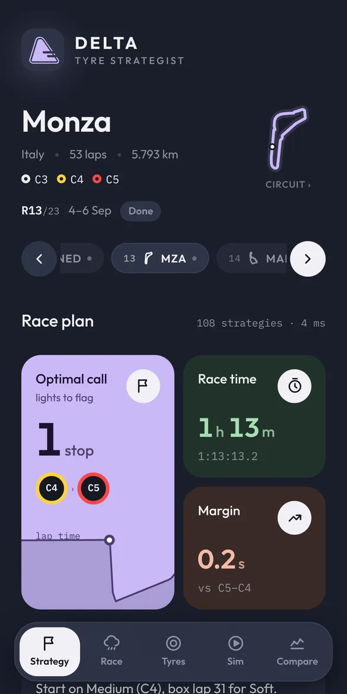
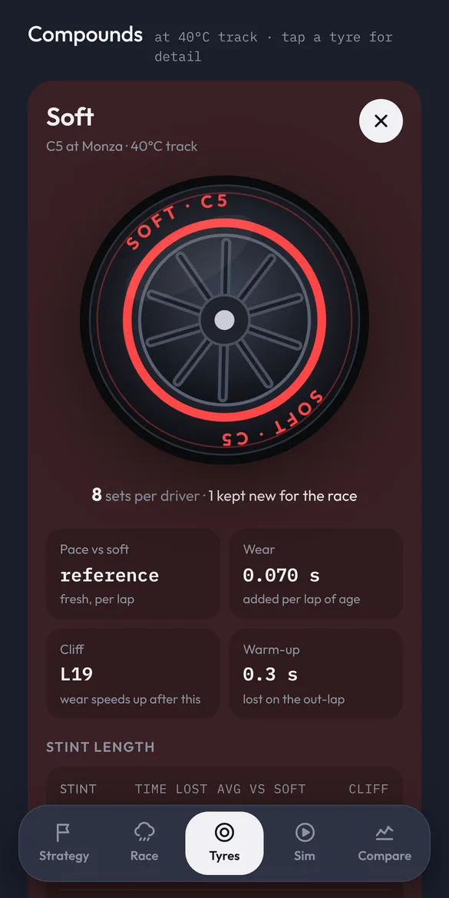
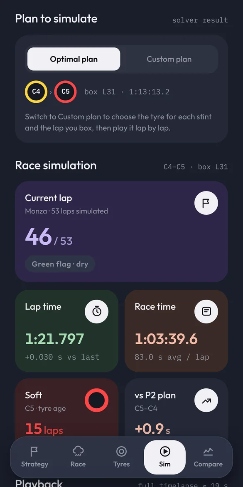
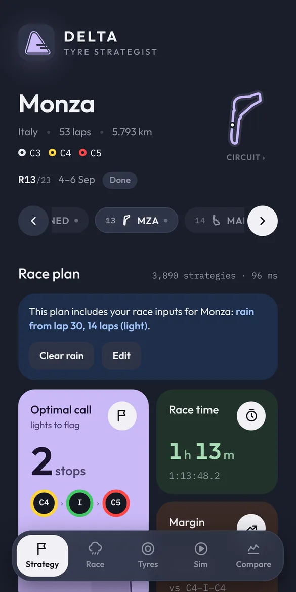
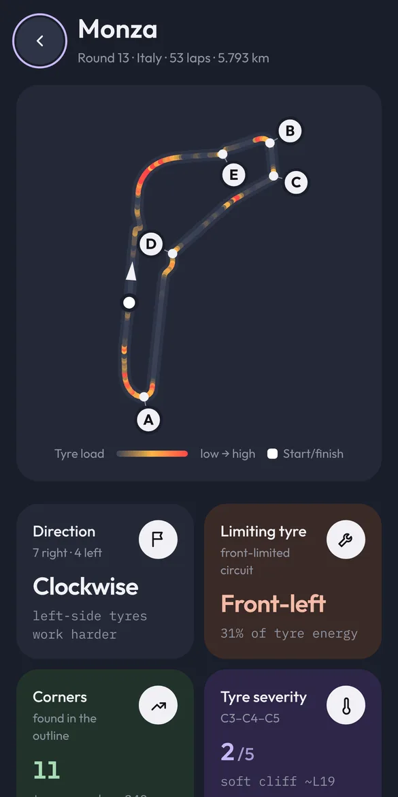

Read the tyres.
Call the race.
Delta predicts how each compound degrades and what every lap will cost, finds the fastest pit strategy for every grand prix, then lets you try your own and see if you beat the model.

This weekend's call
Everything a strategist looks at,
in your pocket.
See how every compound wears
Pace, wear per lap, the cliff and warm-up for the three compounds nominated at each round. A hotter track brings the cliff earlier, and the predictions follow.
- Wear chart for hard, medium and soft
- The tyre allocation teams take into the weekend
- Track temperature you can change

Play the race, lap by lap
Watch predicted lap times change with fuel, tyre age and pit stops, step through it or play a timelapse. Then build your own plan and see what it gains or loses.
- Timelapse at 1×, 2× or 4×
- Pick each stint's tyre and the lap you box
- Touch and hold the chart to read any lap

Rain coming? Replan in a tap
Set when the rain starts and how long it lasts, and Delta switches the plan to intermediates or wets. Mid-race, replan from the current lap with the tyre on the car.
- Light or heavy rain, to the flag or drying
- Safety car and VSC make a stop cheaper
- Two-compound rule handled for you

Find where the tyres suffer
Every circuit map is coloured by tyre load. Delta picks out the corners that work the tyres hardest and the wheel that does the most work, front-limited or rear-limited.
- Heat map of each lap
- Key corners with braking, lateral and traction load
- Compare the model with the last real race

Delta's call for every round
The predicted dry-race plan for all 23 rounds. Pick one to see its pit windows, tyre wear and the corner to watch.
A real model, not a guess
What each lap costs
Lap time is base pace plus the compound's offset, wear that grows with age, a sharp drop past the cliff, fuel weight and warm-up. Track temperature scales the wear.
Every legal plan, compared
Delta tries every sequence of compounds with up to three stops (four in the rain), finds the best lap to box for each and keeps the two-compound rule.
Lap by lap to the flag
The winning plan, or yours, runs lap by lap with pit-stop loss, so you can see exactly where time is won and lost. Fit it to a real race to calibrate.
Questions
Does it need an internet connection?
No. Strategy, simulation and circuit insights all run on your phone. The internet is used only if you tap Retrieve on the Compare tab to download the last real race from the public openf1.org timing data.
How accurate are the predictions?
They're model estimates built on published tyre nominations and typical degradation for each compound. Car performance, weather and track evolution all move real races. Compare the model with a real race inside the app and apply the fit to see how close it gets.
Will it remind me before a race?
Yes, if you turn it on. Delta can send one reminder 4 hours before each grand prix, with its plan for that race. It never sends one for qualifying or sprints.
Is there an iPhone version?
Not yet. Delta is on Android first.
Is Delta official?
No. Delta is an independent fan-made tool. It isn't affiliated with, endorsed by or connected to any racing series, team, driver or tyre manufacturer.
Your strategy against the model.
On Android. Pick a round, make your call and see if you'd have won it on the pit wall.
Get it onGoogle Play